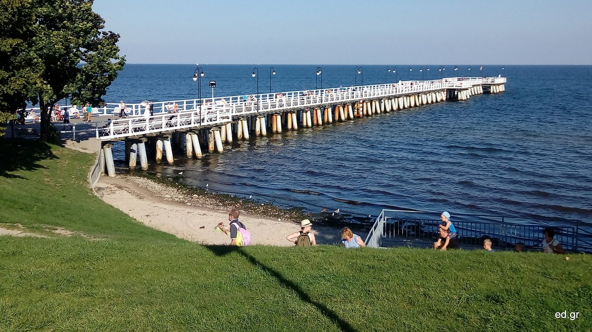

Trip
Kościuszko Square is for sure the beating heart of Gdynia. This bustling square is surrounded by charming cafes, restaurants, and shops, making it an ideal spot to relax and soak up the vibrant atmosphere. you can take a walk to Admire the historic architecture and her different landmarks at the venue, or look at some vibrant street art while enjoying a cup of coffee or indulging in some local cuisine.
Gdynia Aquarium:
Trip in Gdynia
Located on the Baltic Sea in northern Poland. It is part of the Tricity metropolitan area, along with the cities of Gdańsk and Sopot. Despite Gdynia's seaport, which is one of the largest and busiest in Poland as well as for its maritime heritage, this City is not as famous as her Sister which are Gdansk and Sopot. in this article i will present to you some interesting reasons to visit Gdynia
Kościuszko Square:

A view of Kościuszko Square
Kościuszko Square is for sure the beating heart of Gdynia. This bustling square is surrounded by charming cafes, restaurants, and shops, making it an ideal spot to relax and soak up the vibrant atmosphere. you can take a walk to Admire the historic architecture and her different landmarks at the venue, or look at some vibrant street art while enjoying a cup of coffee or indulging in some local cuisine.
The Monument of Polish Maritime on Kosciuszko square in Gdynia
fontaine in the square
Gdynia Aquarium:
Gdynia Aquarium
For marine enthusiasts, the Gdynia Aquarium is a must-visit attraction. Explore the underwater world and discover a diverse range of sea creatures from the Baltic Sea and beyond. From colorful fish to mesmerizing jellyfish, the aquarium offers an educational and immersive experience for visitors of all ages. Don't miss the fascinating feeding sessions and interactive exhibits that provide insights into marine conservation.
Emigration Museum:
Emigration Museum
The Emigration Museum makes you Dive into Gdynia's history , located in a former ocean liner terminal. This unique museum tells the stories of Polish emigrants who embarked on life-changing journeys to distant lands. Through interactive exhibits and personal narratives, visitors gain insights into the challenges and dreams of those who sought new beginnings. It's a thought-provoking and enlightening experience that sheds light on the impact of migration on the polish society.
Orlowo Pier
Orlowo Pier
Escape the bustling city center and head to the charming neighborhood of Orlowo, where you'll find the picturesque Orlowo Pier. This wooden pier offers breathtaking views of the sea and the rugged coastline.Since it is shorter than its cousin at Sopot, you can easily Take a leisurely walk, enjoy the tranquility, and marvel at the beautiful sunset. Orlowo Pier is also surrounded by cozy cafes and restaurants, perfect for a relaxing meal or a cup of coffee with a magnificient view. you also have the opportunity to enjoy the sand near the sea and above all have a good time with family or friends

Another view on orlowo Pier
Stone Mountain in Gdynia
Stone Mountain is a viewpoint with a fascinating history. Rising 52 meters above sea level, my friends and i had a beautiful panorama of the city, including the port of Gdynia. You can reach the top on foot or take a quick ride on the roller coaster(just for 1 zloty). At the summit stands a large cross, symbolizing Gdynia. This is the third cross in the area, as the previous two were destroyed. The mountain was also once home to a residential estate for the city's elite, known for its architecturally interesting houses built in the modernist style. Today, it remains an exclusive and picturesque district. Stone Mountain is a must-visit destination in Gdynia, offering stunning views and a glimpse into the city's past.

Kamienna Gora
Gdynia is a coastal gem that offers a wealth of attractions and experiences. From the lively Kościuszko Square to the serene Orlowo Pier, and from the fascinating Gdynia Aquarium to the thought-provoking Emigration Museum, there's something for everyone in this captivating city.So, plan your visit, explore these top places or even more, and create unforgettable memories in this vibrant Polish coastal destination.
Sources: